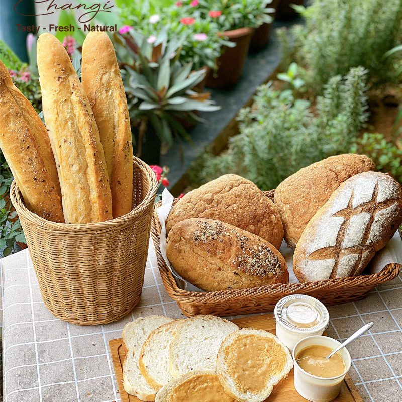
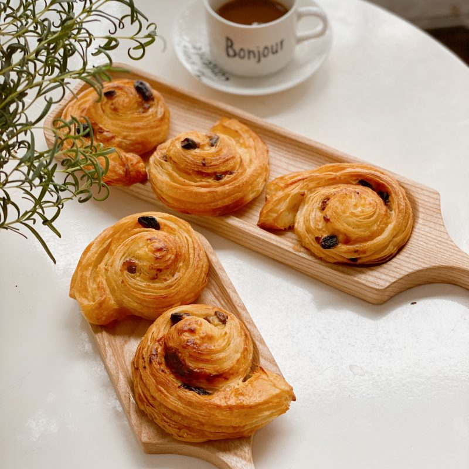
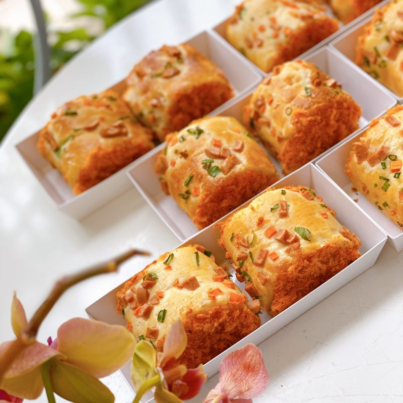
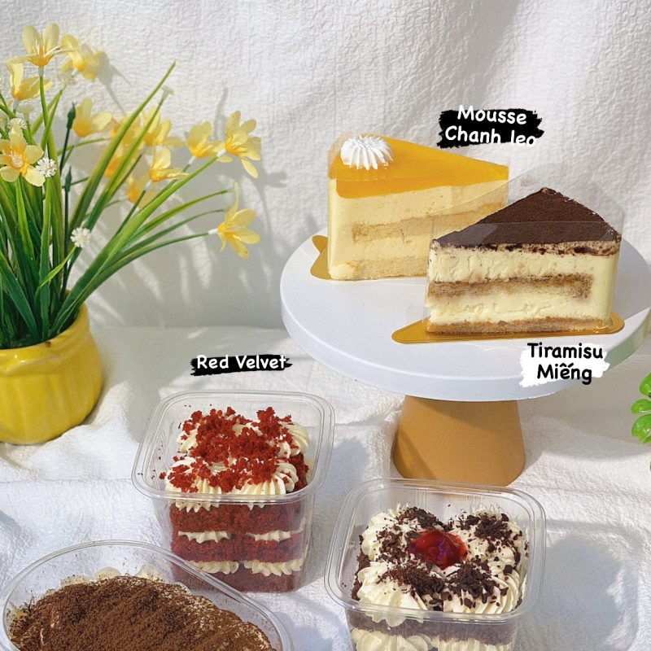
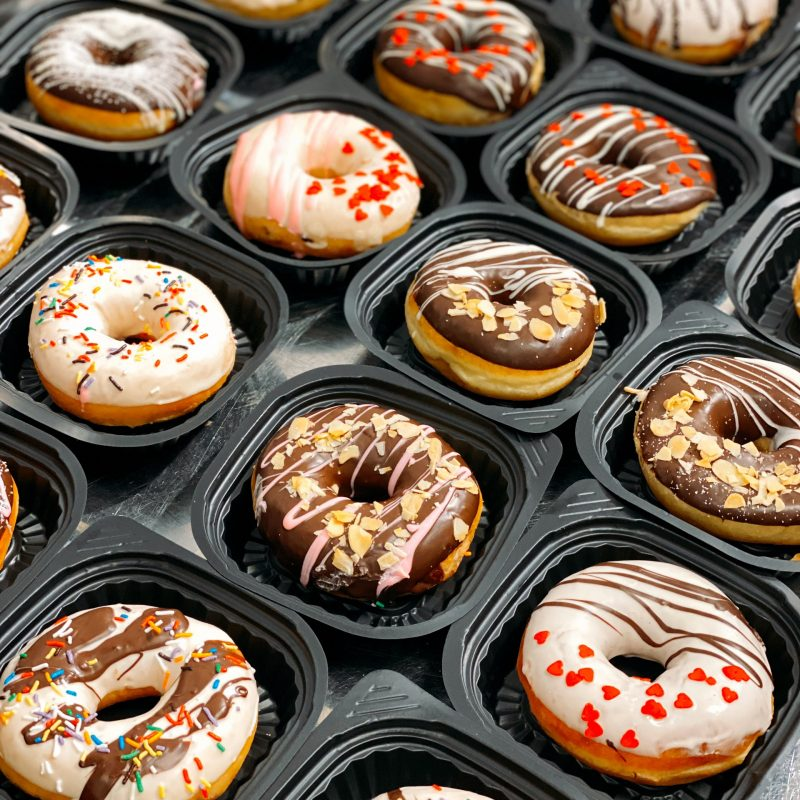
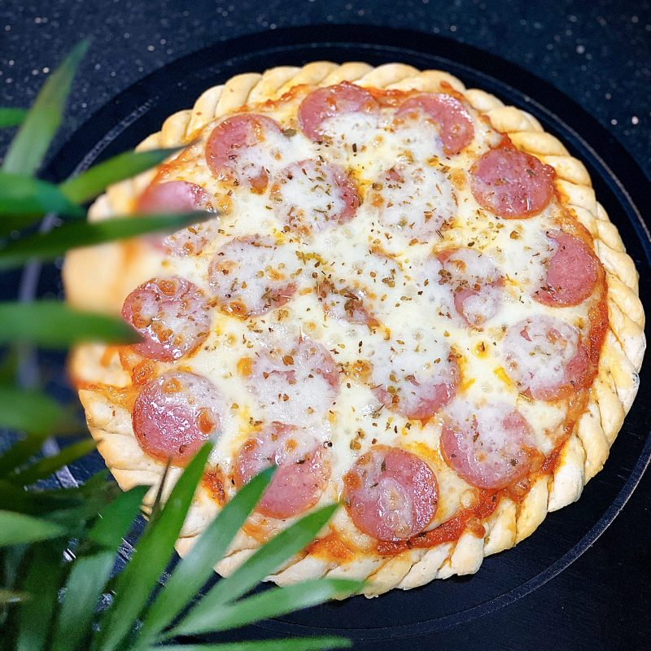
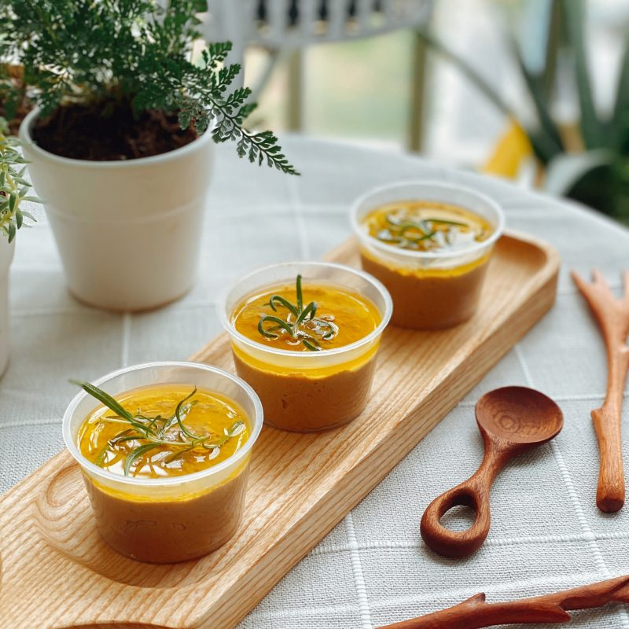
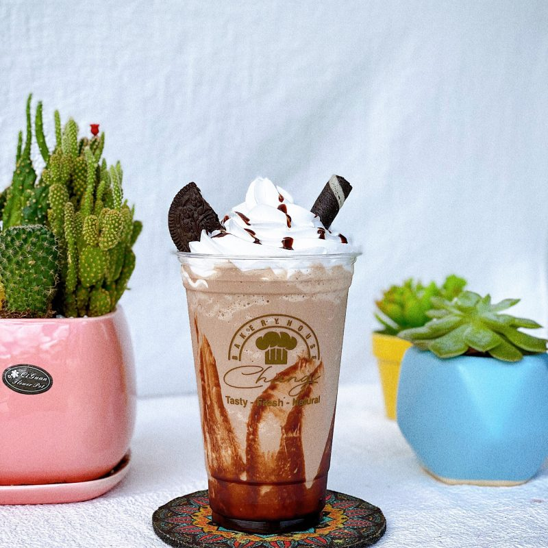
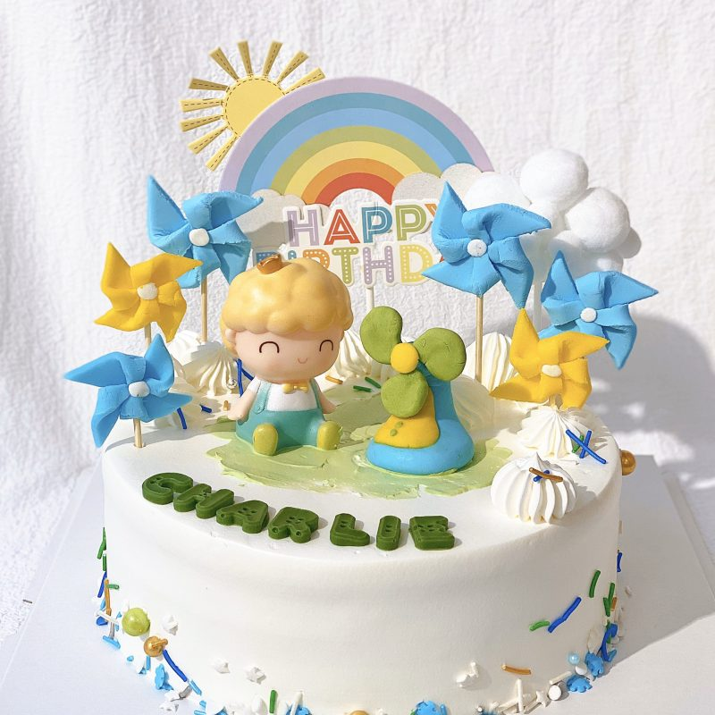

BÁNH MÌ ÂU
Bánh mì là thực phẩm được chế biến từ bột mì hoặc từ ngũ cốc được nghiền ra trộn với nước, thường là bằng cách nướng. Trong suốt quá trình lịch sử, bánh mì đã được phổ biến trên toàn thế giới và là một trong những loại thực phẩm nhân tạo lâu đời nhất.
BÁNH MÌ SOURDOUGH

Sourdough là một loại bánh mì được làm bằng quá trình lên men của bột nhào bằng cách sử dụng nấm men và vi khuẩn lactobacillaceae hoang dã . Axit lactic từ quá trình lên men tạo ra vị chua và cải thiện chất lượng giữ ẩm.
CROISSANT
Bánh sừng bò còn được gọi là bánh croa-xăng (từ tiếng Pháp croissant ), có nguồn gốc từ Áo, là một dạng bánh ăn sáng làm từ pâte feuilletée (bột xốp), được sản xuất từ bột mì, men, bơ, sữa, và muối.
BÁNH MÌ MỀM

Bánh mì mềm
là thực phẩm được chế biến từ bột mì được nghiền ra trộn với nước, thường là bằng cách
nướng. Bánh mì mềm thường được chia làm 2 loại là nhân mặn hoặc nhân ngọt:
– Nhân mặn: bánh có nhân thịt bên trong hoặc phủ lớp topping mặn trên mặt bánh.
– Nhân ngọt: bánh có nhân ngọt hoặc được phủ lớp topping ngọt trên mặt bánh.
CAKES AND DESSERTS
Bánh ngọt là một món ăn nhẹ dùng khi kết thúc một bữa ăn chính. Khẩu phần nhỏ thôi nhưng trình bày đẹp mắt. Món này thường bao gồm các loại thực phẩm ngọt, có thể bao gồm cà phê, pho mát, hạt quả, hoặc các món ăn khác.
BÁNH RÁN ĐÀI LOAN
Bánh rán Đài Loan được làm bởi bột mì trắng, cốt bánh siêu mềm mịn và nhân bánh đa dạng. Loại bánh này được làm chín bằng cách chiên lên với dầu. Giúp cho lớp vỏ ngoài giòn và bên trong mềm.
PIZZA
Pizza là loại bánh dẹt, tròn được chế biến từ nước, bột mỳ và nấm men, sau khi đã được ủ ít nhất 24 tiếng đồng hồ và nhào nặn thành loại bánh có hình dạng tròn và dẹt, và được cho vào lò nướng chín.
MÓN ĂN KÈM
Sourdough là một loại bánh mì được làm bằng quá trình lên men của bột nhào bằng cách sử dụng nấm men và vi khuẩn lactobacillaceae hoang dã . Axit lactic từ quá trình lên men tạo ra vị chua và cải thiện chất lượng giữ ẩm.
ĐỒ UỐNG
Bánh sừng bò còn được gọi là bánh croa-xăng (từ tiếng Pháp croissant ), có nguồn gốc từ Áo, là một dạng bánh ăn sáng làm từ pâte feuilletée (bột xốp), được sản xuất từ bột mì, men, bơ, sữa, và muối.
BÁNH GATO KEM TƯƠI
Gato kem tươi là dòng bánh kem Classic , cốt bánh Vani, kem tươi mix với kem phô mai ngon ngậy ít ngọt. Đan xen giữa lớp cốt bánh và kem là các lớp mứt trái cây như dâu tây, việt quất, đào, nho đen, … vị chua ngọt vừa phải, rất dễ ăn và không ngán. Decor theo đơn đặt hàng.
BÁNH MOUSSE & TIRAMISU
– Mousse Chanh
dây gồm các lớp cốt bánh bông lan và lớp kem chanh dây chua ngọt thanh mát, rất dễ ăn và hợp khẩu vị số
đông.
– Tiramisu là dòng bánh cao cấp, mang hương vị chuẩn Ý với các lớp cốt bông lan đậm vị cà phê,
hương
rượu Rhum thoang thoảng. Lớp kem ngậy ngon hoà quyện cùng cốt bánh mềm mướt tan trong miệng.